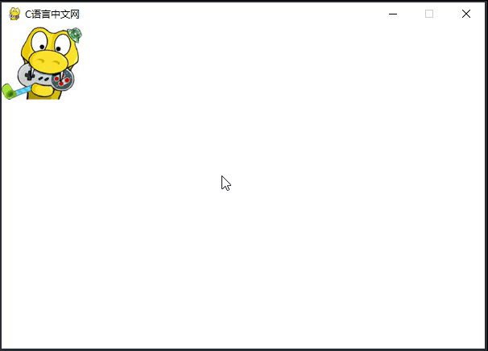
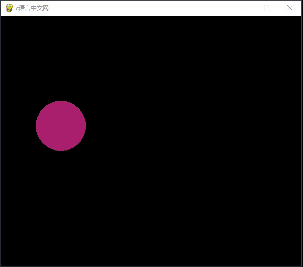

Pygame Event事件模块（详细示例）
事件（Event）是 Pygame 的重要模块之一，它是构建整个游戏程序的核心，比如鼠标点击、键盘敲击、游戏窗口移动、调整窗口大小、触发特定的情节、退出游戏等等，这些都可以看做是“事件”，Pygame 会接受用户产生的各种操作（或事件），这些操作随时产生，并且操作量可大可小，那么 Pygame 是如何处理这些事件的呢？
当我们使用 Pygame 处理事件时，逻辑一般都是相似的。首先是判断事件的类型，然后根据不同的事件操作，执行不同的游戏操作。因此这种情况非常适合使用 if ... else 语句。如下所示：
键盘事件提供了一个 key 属性，通过该属性可以获取键盘的按键。Pygame 将键盘上的字母键、数字键、组合键等按键以常量的方式进行了定义，下表列出了部分常用按键的常量：
事件类型
Pygame 定义了一个专门用来处理事件的结构，即事件队列，该结构遵循遵循队列“先到先处理”的基本原则，通过事件队列，我们可以有序的、逐一的处理用户的操作（触发事件）。下述表格列出了 Pygame 中常用的游戏事件：| 事件类型 | 描述 | 成员属性 |
|---|---|---|
| QUIT | 用户按下窗口的关闭按钮 | none |
| ATIVEEVENT | Pygame被激活或者隐藏 | gain,state |
| KEYDOWN | 键盘按下 | unicode、key、mod |
| KEYUP | 键盘放开 | key、mod |
| MOUSEMOTION | 鼠标移动 | pos, rel, buttons |
| MOUSEBUTTONDOWN | 鼠标按下 | pos, button |
| MOUSEBUTTONUP | 鼠标放开 | pos, button |
| JOYAXISMOTION | 游戏手柄(Joystick or pad) 移动 | joy, axis, value |
| JOYBALLMOTION | 游戏球(Joy ball) 移动 | joy, axis, value |
| JOYHATMOTION | 游戏手柄(Joystick) 移动 | joy, axis, value |
| JOYBUTTONDOWN | 游戏手柄按下 | joy, button |
| JOYBUTTONUP | 游戏手柄放开 | joy, button |
| VIDEORESIZE | Pygame窗口缩放 | size, w, h |
| VIDEOEXPOSE | Pygame窗口部分公开(expose) | none |
| USEREVENT | 触发一个用户事件 | 事件代码 |
注意，当使用 Pygame 做游戏开发时，上述事件并非都会应用的到，因此在学习的过程中，我们要懂得触类旁通、举一反三。
事件处理方法
Pygame.event 模块提供了处理事件队列的常用方法，如下表所示：| 方法 | 说明 |
|---|---|
| pygame.event.get() | 从事件队列中获取一个事件，并从队列中删除该事件 |
| pygame.event.wait() | 阻塞直至事件发生才会继续执行，若没有事件发生将一直处于阻塞状态 |
| pygame.event.set_blocked() | 控制哪些事件禁止进入队列，如果参数值为None，则表示禁止所有事件进入 |
| pygame.event.set_allowed() | 控制哪些事件允许进入队列 |
| pygame.event.pump() | 调用该方法后，Pygame 会自动处理事件队列 |
| pygame.event.poll() | 会根据实际情形返回一个真实的事件，或者一个None |
| pygame.event.peek() | 检测某类型事件是否在队列中 |
| pygame.event.clear() | 从队列中清除所有的事件 |
| pygame.event.get_blocked() | 检测某一类型的事件是否被禁止进入队列 |
| pygame.event.post() | 放置一个新的事件到队列中 |
| pygame.event.Event() | 创建一个用户自定义的新事件 |
当我们使用 Pygame 处理事件时，逻辑一般都是相似的。首先是判断事件的类型，然后根据不同的事件操作，执行不同的游戏操作。因此这种情况非常适合使用 if ... else 语句。如下所示：
while True:
#等待事件发生
event = pygame.event.wait()
if event.type == pygame.QUIT:
exit()
if event.type == pygame.MOUSEBUTTONDOWN:
print('鼠标按下',event.pos)
if event.type == pygame.MOUSEBUTTONUP:
print('鼠标弹起')
if event.type == pygame.MOUSEMOTION:
print('鼠标移动')
# 键盘事件
if event.type ==pygame.KEYDOWN:
# 打印按键的英文字符
print('键盘按下',chr(event.key))
if event.type == pygame.KEYUP:
print('键盘弹起')
....
下面应用上述方法对鼠标事件和键盘事件分别做简单的介绍。
处理键盘事件
键盘事件会涉及到大量的按键操作，比如游戏中的上下左右，或者人物的前进、后退等操作，这些都需要键盘来配合实现。键盘事件提供了一个 key 属性，通过该属性可以获取键盘的按键。Pygame 将键盘上的字母键、数字键、组合键等按键以常量的方式进行了定义，下表列出了部分常用按键的常量：
| 常量名 | 描述 |
|---|---|
| K_BACKSPACE | 退格键（Backspace） |
| K_TAB | 制表键（Tab） |
| K_CLEAR | 清除键（Clear） |
| K_RETURN | 回车键（Enter） |
| K_PAUSE | 暂停键（Pause） |
| K_ESCAPE | 退出键（Escape） |
| K_SPACE | 空格键（Space） |
| K_0...K_9 | 0...9 |
| K_a...Kz | a...z |
| K_DELETE | 删除键（delete） |
| K_KP0...K_KP9 | 0（小键盘）...9（小键盘） |
| K_F1...K_F15 | F1...F15 |
| K_UP | 向上箭头（up arrow） |
| K_DOWN | 向下箭头（down arrow） |
| K_RIGHT | 向右箭头（right arrow） |
| K_LEFT | 向左箭头（left arrow） |
| KMOD_ALT | 同时按下Alt键 |
想要了解更多按键常量可参考官方文档，这里有您想要的更多知识 ———> 点击前往。
下面通过“图片移动”示例来了解键盘事件的处理过程，如下所示：
import pygame
import sys
# 初始化pygame
pygame.init()
# 定义变量
size = width, height = 600, 400
bg = (255, 255, 255)
# 加载logo图
img = pygame.image.load("C:/Users/Administrator/Desktop/logo.jpg")
# 获取图像的位置
position = img.get_rect()
# 创建一个主窗口
screen = pygame.display.set_mode(size)
# 标题
pygame.display.set_caption("C语言中文网")
# 创建游戏主循环
while True:
# 设置初始值
site = [0, 0]
for event in pygame.event.get():
if event.type == pygame.QUIT:
sys.exit()
# 图像移动 KEYDOWN 键盘按下事件
# 通过 key 属性对应按键
if event.type == pygame.KEYDOWN:
if event.key == pygame.K_UP:
site[1] -= 8
if event.key == pygame.K_DOWN:
site[1] += 8
if event.key == pygame.K_LEFT:
site[0] -= 8
if event.key == pygame.K_RIGHT:
site[0] += 8
# 移动图像
position = position.move(site)
# 填充背景
screen.fill(bg)
# 放置图片
screen.blit(img, position)
# 更新显示界面
pygame.display.flip()
程序运行结果如下：

图1：Pygame键盘事件——图像移动
图1：Pygame键盘事件——图像移动
处理鼠标事件
鼠标是计算机最重要外接设备之一，同时它也是游戏玩家必不可少的工具之一。
Pygame 提供了三个鼠标事件，分别是鼠标移动（MOUSEMOTION）、鼠标按下（MOUSEBUTTONDOWN）、鼠标释放（MOUSEBUTTONUP），不同事件类型对应着不同的成员属性。如下所示：
pygame.event.MOUSEMOTION鼠标移动事件
event.pos 相对于窗口左上角，鼠标的当前坐标值(x,y)
event.rel 鼠标相对运动距离(X,Y)，相对于上次事件
event.buttons 鼠标按钮初始状态(0,0,0)，分别对应(左键,滑轮,右键)，移动过程中点击那个键，相应位置变会为1
pygame.event.MOUSEBUTTONUP鼠标键释放事件
event.pos 相对于窗口左上角，鼠标的当前坐标值(x,y)
event.button 鼠标释放键编号（整数）左键为1，按下滚动轮2、右键为3
pygame.event.MOUSEBUTTONDOWN 鼠标键按下事件
event.pos 相对于窗口左上角，鼠标的当前坐标值(x,y)
event.button 鼠标按下键编号（整数），左键为1，按下滚动轮2、右键为3，向前滚动滑轮4、向后滚动滑轮5
通过一组简单的示例对鼠标事件进行演示，示例代码如下：
import pygame
from random import randint
# 初始化程序
pygame.init()
screen = pygame.display.set_mode((450,400))
pygame.display.set_caption("c语言中文网")
# 更新显示
pygame.display.flip()
while True:
#等待事件发生
event = pygame.event.wait()
if event.type == pygame.QUIT:
exit("成功退出")
if event.type == pygame.MOUSEBUTTONDOWN:
# pos 获取鼠标当前位置
print('鼠标按下',event.pos)
mx,my = event.pos
# 调用 pygame.draw 模块画圆
pygame.draw.circle(screen,(255,255,0),(mx,my),50)
# 处理完，更新显示
pygame.display.update()
if event.type == pygame.MOUSEBUTTONUP:
print('鼠标弹起')
pass
if event.type == pygame.MOUSEMOTION:
print('鼠标移动')
mx, my = event.pos
# 随机生成 RGB 颜色值
r = randint(0,255)
g = randint(0,255)
b = randint(0,255)
pygame.draw.circle(screen, (r,g,b,),(mx, my), 50)
# 处理完，更新显示
pygame.display.update()
程序运行结果如下：

图2：Pygame鼠标事件——鼠标移动
图2：Pygame鼠标事件——鼠标移动
关注公众号「站长严长生」，在手机上阅读所有教程，随时随地都能学习。内含一款搜索神器，免费下载全网书籍和视频。

微信扫码关注公众号